먼저 보는 요약
- 실적: 성과보수가 빠지며 이익이 2025년 고점에서 내려오는 중입니다1
- 밸류에이션: 순자산의 절반 가격으로, 낮은 ROE를 가정하고 있습니다2
- 주가: 6개월 -27.6%로 52주 최저가 부근입니다3
- 공시로 본 핵심: 성장 목표는 크지만 이익·현금이 아직 따라오지 않습니다67
- 체크포인트: 배당 세제·인력 이탈·평판 이슈를 같이 봐야 합니다910
- 재무FnGuide 재무제표 (연간·분기, 개별기업 분석 엑셀)
- 기본KRX·KIND 상장법인 정보 (시장·업종·시가총액)
- 시세네이버 증권 일별 시세
- 뉴스2026-11-02머니투데이 · SBI인베도 '관리종목' 초읽기…상장 VC '동전주' 탈출 안간힘
- 뉴스2026-10-12톱데일리 · 신규 입성도 수익도 위축됐다…IPO 한파에 벤처캐피털 회수 고심
- 공시2026-05-11DART · [기재정정]기업가치제고계획(자율공시) (2026년 기업가치 제고 계획)
- 공시2026-08-14DART · 반기보고서 (2026.06)
- 공시2026-02-09DART · 현금ㆍ현물배당결정
- 공시2026-05-11DART · [기재정정]기업가치제고계획(자율공시) (2026년 기업가치 제고 계획) (고배당기업 여부)
- 뉴스2026-06-23딜사이트 · 황상연 이탈 여파…HB인베 PE본부 사실상 해체
- 뉴스2026-10-23서울경제 · HB인베, 지난해 코리에 500억 투자 추진…황상연 대표, 인지 여부 도마위 [시그널]
- 뉴스2026-10-29톱데일리 · 산은·HB·메디치, 장기 투자한 '데스틴파워' 엑시트 길 열렸다
- 뉴스2026-10-23뉴스톱 · HB인베스트, 투자 선구안 또 ‘번뜩’...데스틴파워 코스닥行
배당소득 분리과세 (고배당기업)
미해당공식
회사가 2026-05-11 DART 공시에서 '고배당기업 여부: 미해당'으로 밝혔습니다 (직전 사업연도 배당 기준).
- 공시 판정은 회사 자체 판단이라고 공시에 적혀 있습니다.
제도 요약
- 근거: 조세특례제한법 제104조의27 (고배당기업 배당소득 과세특례), 코스피·코스닥 상장사 대상
- 요건: 2024 사업연도보다 배당이 줄지 않고, 배당성향 40% 이상 또는 배당성향 25% 이상 + 전년 대비 배당 10% 이상 증가
- 2026년 1월 1일 이후 지급 배당부터 2028년까지 한시 적용 (안내 자료 기준)
- 해당 기업 배당은 다른 금융소득과 합산하지 않고 아래 세율로 따로 과세할 수 있습니다. ETF 분배금은 대상이 아닙니다.
| 분리과세 대상 배당소득 | 세율 |
|---|---|
| 2천만원 이하 | 14% |
| 2천만원 초과 ~ 3억원 이하 | 20% |
| 3억원 초과 ~ 50억원 이하 | 25% |
| 50억원 초과 | 30% |
- [S7] DART · [기재정정]기업가치제고계획(자율공시) (2026년 기업가치 제고 계획) (고배당기업 여부) · 2026-05-11
- [S8] 고배당기업 배당소득 분리과세 안내 (KB Think)
사업 구조
무엇으로 돈을 버는 회사인가?
벤처투자조합을 만들어 운용하고 관리보수·성과보수를 받는 VC입니다. 관리보수는 AUM에 비례해 안정적이지만, 이익의 등락은 성과보수(회수 성공)가 결정합니다.
- 조합 결성 → 투자 → 회수 → 분배로 이어지는 GP 사업입니다1
- 매출의 4분의 3이 관리보수·성과보수입니다13
- AUM은 커지고 있어 관리보수 바닥은 높아지는 방향입니다2
- 성과보수는 소수 대박 회수에 몰려 있습니다76
| 항목 | 값 |
|---|---|
| 운용 조합 수 | 19개1 |
| AUM (2025년 말) | 7,518억원12 |
| 2025년 신규 결성 | 2개 조합, 1,350억원1 |
| 2025년 투자 집행 | 22개사, 약 670억원1 |
| 2025년 관리·성과보수 수령 | 약 133억원1 |
| AUM 목표 | 2028년 내 1조원2 |
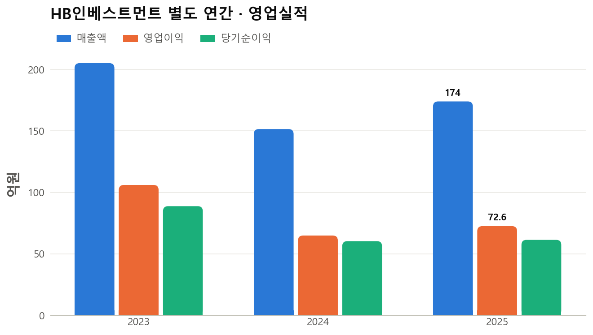
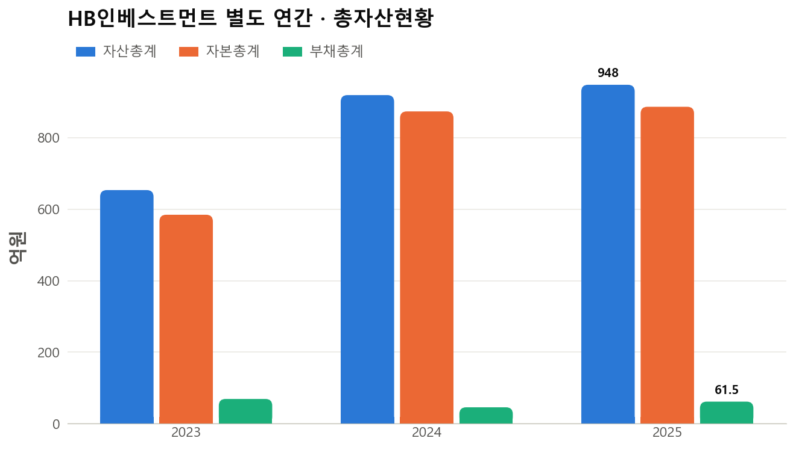
- 공시2026-08-14DART · 반기보고서 (2026.06)
- 공시2026-05-11DART · [기재정정]기업가치제고계획(자율공시) (2026년 기업가치 제고 계획)
- 재무FnGuide 재무제표 (연간·분기, 개별기업 분석 엑셀)
- 뉴스2026-04-10톱데일리 · 황유선 HB인베스트 대표 "1500억 펀드 장착…AUM 1조 도약 변곡점"
- 뉴스2026-06-18알파경제 · HB인베스트먼트, 역대 최대 규모 펀드 결성...체급 확대
- 뉴스2026-05-12뉴스톱 · HB인베스트, 달바 투자로 670억 벌었다
- 뉴스2026-05-21톱데일리 · 성과보수 공백 메운 '달바 효과'…HB인베스트 실적 개선
- 뉴스2026-07-30뉴스토마토 · [IB토마토]HB인베스트, IPO 무산 때 더 샀다…마키나락스 투자 2.7배 회수
- 뉴스2026-03-10딜사이트 · 전쟁이 가져온 잭팟…HB인베 삼양컴텍 3.8배 회수
- 뉴스2026-09-14딜사이트 · 달바-마키나락스 연타석 홈런…HB 박동주 18억 찍었다
- 뉴스2026-09-09톱데일리 · '달바 잭팟' 이승문 HB인베스트 상무, 크리에이츠로 연속 회수 노린다
실적 추세
실적은 어디로 가고 있나?
연간 이익은 2023년 고점 이후 60억원대에서 횡보하고, 2026년 상반기는 전년보다 줄었습니다. 분기 이익은 성과보수에 따라 4억~39억원으로 크게 출렁입니다.
| 구분 | 2023 | 2024 | 2025 | TTM(2026.06) |
|---|---|---|---|---|
| 매출액(억원) | 205.2 | 151.5 | 174.0 | 161.0 |
| 영업이익(억원) | 106.1 | 65.0 | 72.6 | 66.9 |
| 순이익(억원) | 88.8 | 60.4 | 61.4 | 56.2 |
| 영업이익률(%) | 51.7 | 42.9 | 41.7 | 41.6 (추정) |
| ROE(%) | 16.6 | 8.3 | 7.0 | 6.4 |
- 재무FnGuide 재무제표 (연간·분기, 개별기업 분석 엑셀)
- 공시2026-08-14DART · 반기보고서 (2026.06)
- 재무FnGuide 컨센서스 추정치
이익의 질과 현금흐름
이익의 질과 현금흐름은 믿을 만한가?
3년 누적으로는 순이익의 약 40%만 영업현금으로 들어왔지만, 최근 12개월은 영업현금이 순이익보다 많습니다. 현금 유입 시기가 회수 시점에 몰리는 구조입니다.
| 연도 | 순이익(억원) | 영업현금흐름(억원) | 투자현금흐름(억원) | 재무현금흐름(억원) |
|---|---|---|---|---|
| 2023 | 88.8 | 83.5 | -6.5 | -2.1 |
| 2024 | 60.4 | -35.0 | -220.1 | 226.4 |
| 2025 | 61.4 | 36.8 | -24.5 | -51.0 |
| TTM(2026.06) | 56.2 | 91.9 | - | - |
- 재무FnGuide 재무제표 (연간·분기, 개별기업 분석 엑셀)
- 기본KRX·KIND 상장법인 정보 (시장·업종·시가총액)
- 공시2026-08-14DART · 반기보고서 (2026.06)
재무 안정성
재무는 안전한가?
부채비율 5.2%, 자기자본비율 95%로 사실상 무차입입니다. 재무 위험보다는 자산(투자지분)의 가치 변동이 핵심 위험입니다.
| 항목(억원) | 2024년 말 | 2025년 말 | 2026.06 |
|---|---|---|---|
| 자산총계 | 919.1 | 948.0 | 931.3 |
| 부채총계 | 45.6 | 61.5 | 46.2 |
| 자본총계 | 873.5 | 886.4 | 885.1 |
| 유동자산 | 327.0 | 314.5 | 356.6 |
| 현금및현금성자산 | 51.3 | 12.6 | 30.0 |
| 부채비율(%) | 5.22 | 6.94 | 5.22 |
- 재무FnGuide 재무제표 (연간·분기, 개별기업 분석 엑셀)
- 공시2026-08-14DART · 반기보고서 (2026.06)
- 퀀트자체 퀀트 전략 리포트 순위 (Quant_report 20261102)
밸류에이션
지금 주가는 비싼가 싼가?
PBR 0.5배·PER 7.8배·배당수익률 7.5%로 숫자상 싸지만, 시장은 ROE가 4% 안팎으로 더 낮아질 가능성을 가격에 넣고 있습니다 (추정).
| 지표 | 현재 | 2025년 말 | 2024년 말 |
|---|---|---|---|
| 주가(원) | 1,594 | 2,140 | 1,580 |
| PER(배) | 7.8 | 9.47 | 6.99 |
| PBR(배) | 0.5 | 0.66 | 0.49 |
| PSR(배) | 약 2.7 (추정) | 3.34 | 2.78 |
| 배당수익률(%) | 7.53 | 5.61 | 12.66 |
| S-RIM(원) | 2,554 | 2,810 | 3,335 |
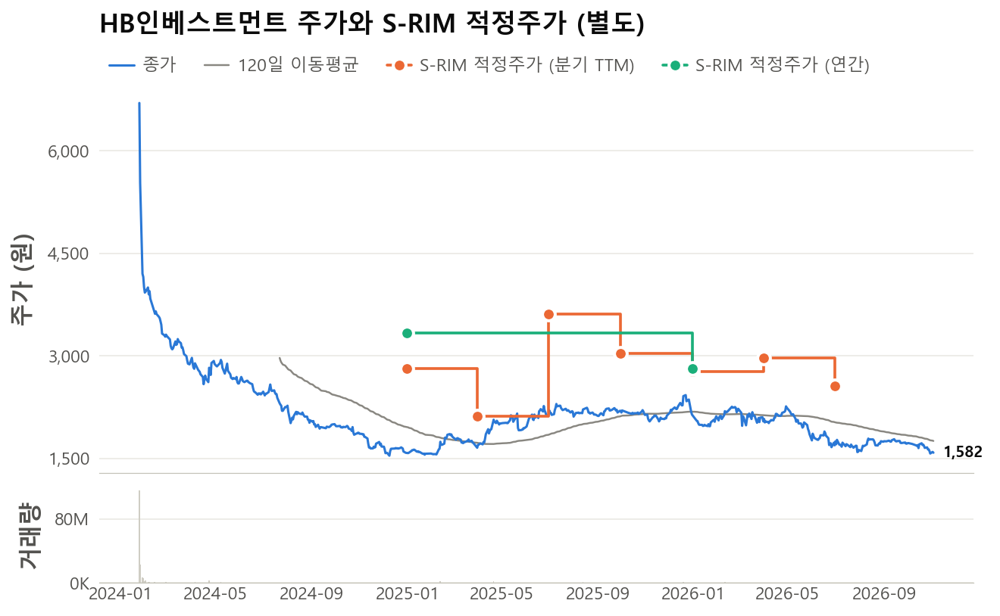
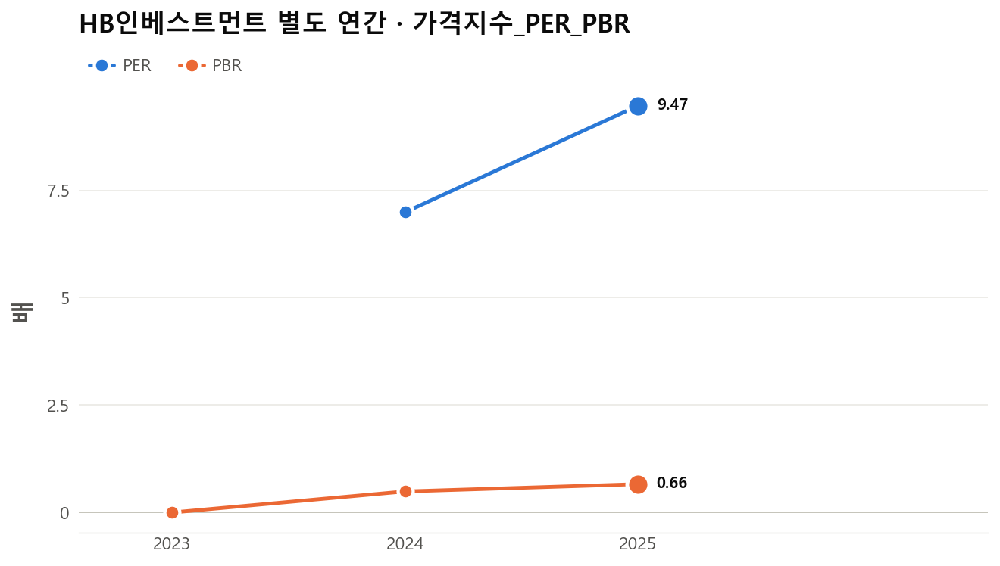
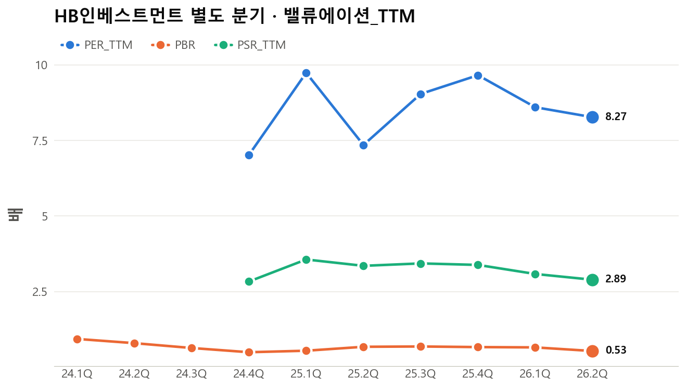
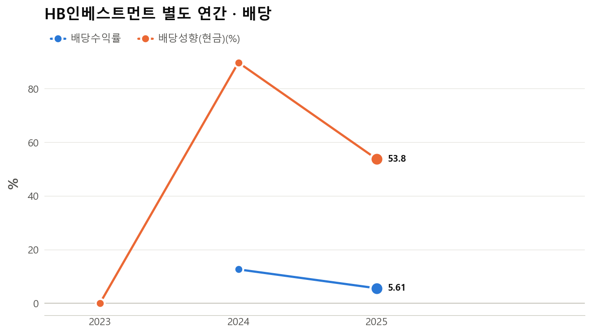
- 재무FnGuide 재무제표 (연간·분기, 개별기업 분석 엑셀)
- 기본KRX·KIND 상장법인 정보 (시장·업종·시가총액)
- 공시2026-02-09DART · 현금ㆍ현물배당결정
- 공시2026-05-11DART · [기재정정]기업가치제고계획(자율공시) (2026년 기업가치 제고 계획)
- 공시2026-05-11DART · [기재정정]기업가치제고계획(자율공시) (2026년 기업가치 제고 계획) (고배당기업 여부)
- 퀀트동종업종 비교 (KIND 업종 + 자체 퀀트 리포트)
- 재무FnGuide 컨센서스 추정치
퀀트 위치
퀀트 지표로 본 위치는?
수익성·배당·재무안정 지표는 상위 5% 안에 들지만, 가치 복합 지표는 상위 25~30%로 '아주 싸다'고까지 나오지는 않습니다.
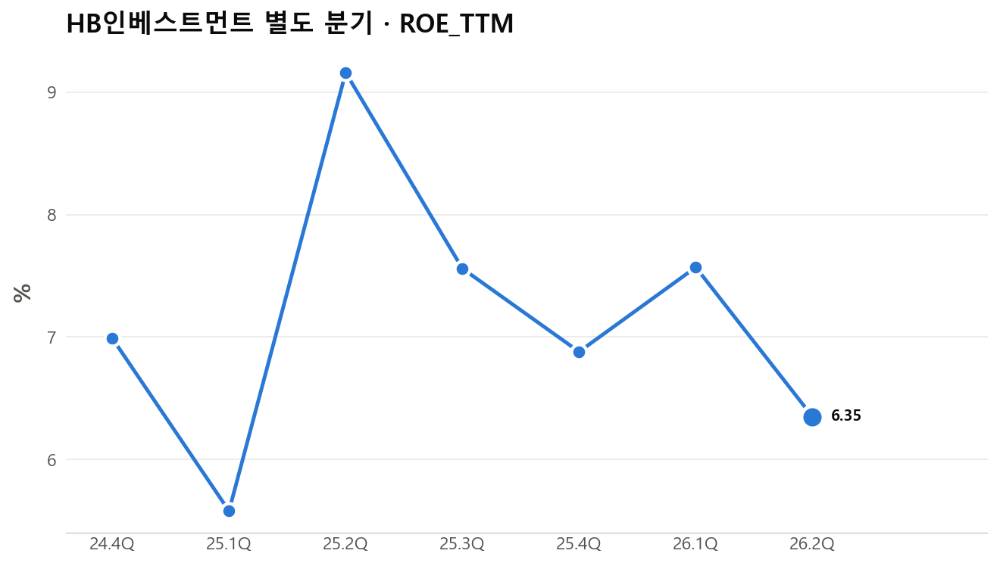
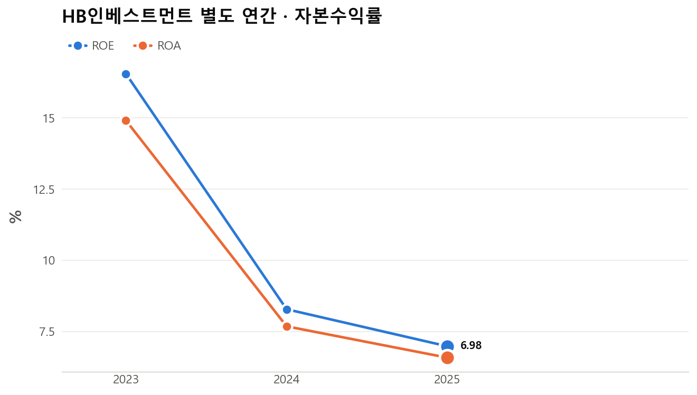
- 퀀트자체 퀀트 전략 리포트 순위 (Quant_report 20261102)
- 기본KRX·KIND 상장법인 정보 (시장·업종·시가총액)
- 재무FnGuide 재무제표 (연간·분기, 개별기업 분석 엑셀)
지난 1년의 사건
지난 1년 무슨 일이 있었나?
달바·마키나락스 회수로 이익을 지켰지만, PE 대표 이탈과 PE본부 해체, 전 대표 관련 투자 논란이 겹쳤습니다. 하반기엔 데스틴파워 상장 추진이 새 회수 재료입니다.
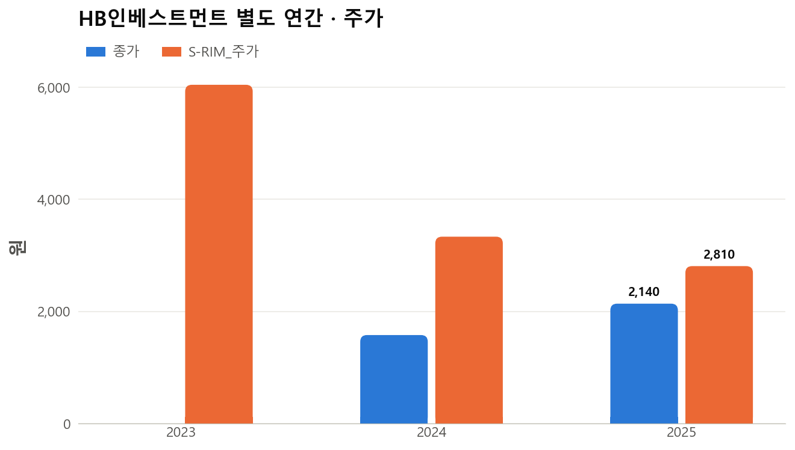
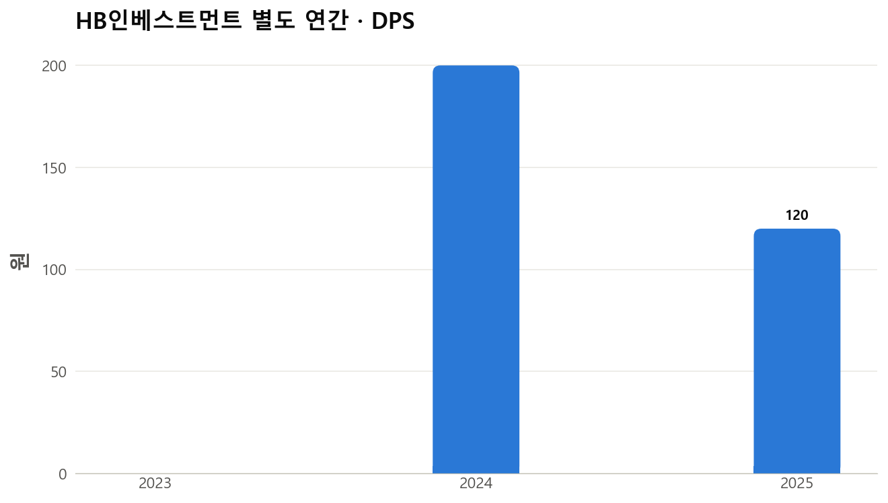
- 뉴스2026-05-12뉴스톱 · HB인베스트, 달바 투자로 670억 벌었다
- 뉴스2026-05-21톱데일리 · 성과보수 공백 메운 '달바 효과'…HB인베스트 실적 개선
- 뉴스2026-07-30뉴스토마토 · [IB토마토]HB인베스트, IPO 무산 때 더 샀다…마키나락스 투자 2.7배 회수
- 뉴스2026-03-10딜사이트 · 전쟁이 가져온 잭팟…HB인베 삼양컴텍 3.8배 회수
- 뉴스2026-03-12히트뉴스 · 한미약품, 황상연 HB인베스트먼트 PE대표 새 대표로 내정
- 뉴스2026-03-13연합뉴스 · 한미약품 대표에 황상연 내정…첫 외부 출신 CEO
- 뉴스2026-06-23딜사이트 · 황상연 이탈 여파…HB인베 PE본부 사실상 해체
- 뉴스2026-04-16연합인포맥스 · HB인베스트, PE 공백 VC로 메운다…신한캐피탈 출신 심사역 영입
- 뉴스2026-05-12톱데일리 · HB인베스트, 약사 출신 심사역 영입…바이오 투자 강화
- 뉴스2026-10-23서울경제 · HB인베, 지난해 코리에 500억 투자 추진…황상연 대표, 인지 여부 도마위 [시그널]
- 뉴스2026-10-23데일리안 · [단독] 황상연 한미약품 대표, HB인베 시절 '코리 투자' 담당자였다
- 공시2026-08-14DART · 반기보고서 (2026.06)
- 뉴스2026-06-18알파경제 · HB인베스트먼트, 역대 최대 규모 펀드 결성...체급 확대
- 공시2026-02-09DART · 현금ㆍ현물배당결정
- 공시2025-11-03DART · 주식매수선택권행사
- 재무FnGuide 재무제표 (연간·분기, 개별기업 분석 엑셀)
- 뉴스2026-10-22S저널 · 황상연 한미약품 대표, '코리 500억 투자 추진' 의혹… '이해 충돌' 여부 논란
- 뉴스2026-07-02딜사이트 · K패션 피스피스스튜디오 쇼크…IMM·HB인베 좌절
증권가 시각
증권가는 어떻게 보나?
한경컨센서스 리포트·컨센서스 추정치·선진짱 채널 자료가 없습니다. 언론에 인용된 NH 분석은 외형 확대와 달바 추가 매각에 주목했습니다.
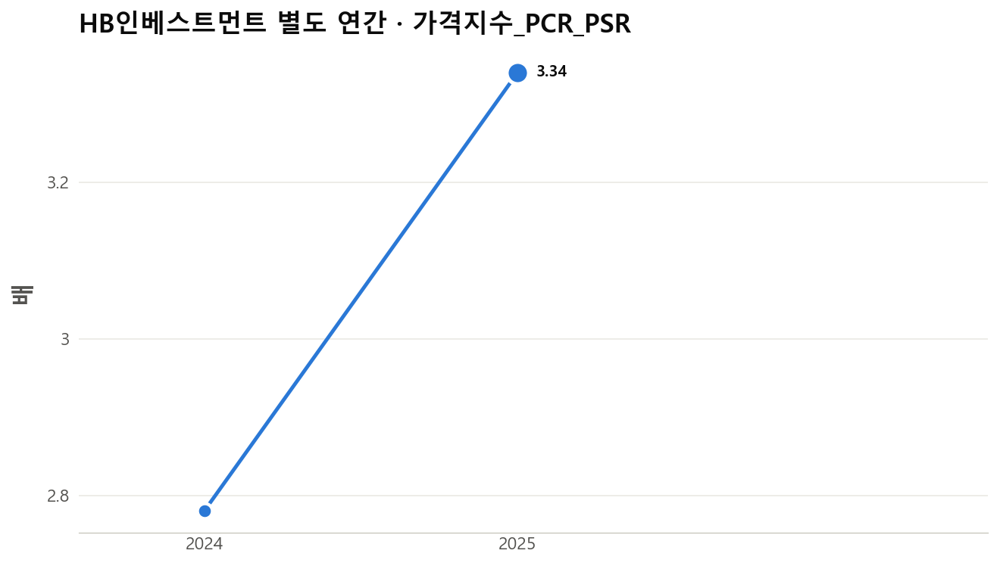
- 재무FnGuide 컨센서스 추정치
- 뉴스2026-06-18마켓인 · HB인베스트먼트, 벤처 업계 활성화로 외형 확대 구간 진입-NH
- 뉴스2025-12-11마켓인 · HB인베, AI·소부장·뷰티 집중 투자…달바 지분 추가 매각 전망-NH
- 뉴스2026-10-12톱데일리 · 신규 입성도 수익도 위축됐다…IPO 한파에 벤처캐피털 회수 고심
- 뉴스2026-11-02머니투데이 · SBI인베도 '관리종목' 초읽기…상장 VC '동전주' 탈출 안간힘
- 뉴스2026-08-19뉴스톱 · 상장 VC 2분기 실적 ‘훈풍’…주요 운용사 영업이익 개선
앞으로 볼 것
앞으로 무엇을 확인해야 하나?
하반기 성과보수 유입(데스틴파워 등 회수), 1,500억원 펀드 결성에 따른 관리보수 증가, 2026년 결산 배당 규모가 주가 재평가의 세 갈래입니다.
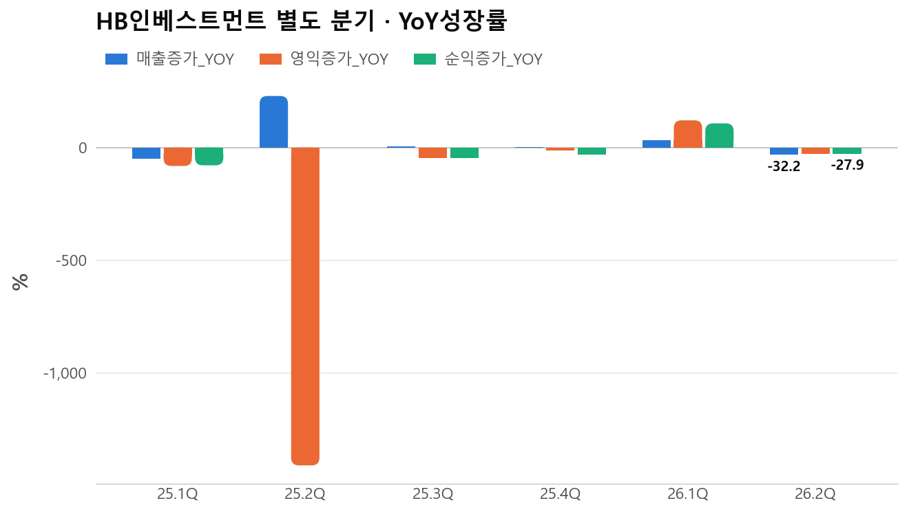
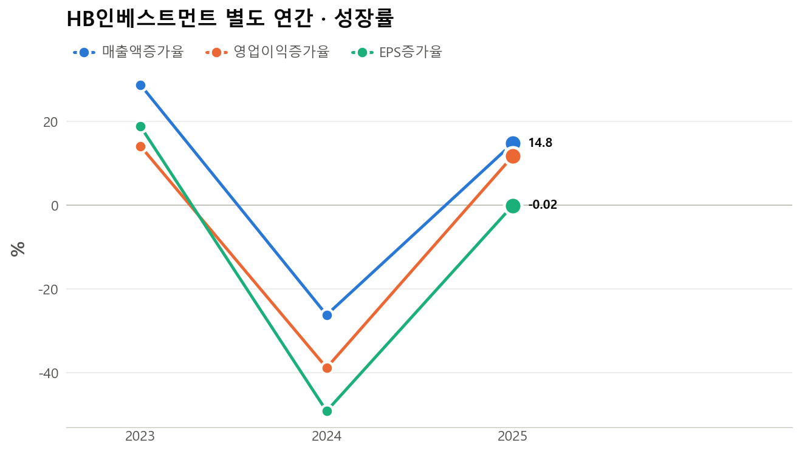
- 뉴스2026-10-29톱데일리 · 산은·HB·메디치, 장기 투자한 '데스틴파워' 엑시트 길 열렸다
- 뉴스2026-10-23뉴스톱 · HB인베스트, 투자 선구안 또 ‘번뜩’...데스틴파워 코스닥行
- 뉴스2026-09-09톱데일리 · '달바 잭팟' 이승문 HB인베스트 상무, 크리에이츠로 연속 회수 노린다
- 뉴스2026-04-10톱데일리 · 황유선 HB인베스트 대표 "1500억 펀드 장착…AUM 1조 도약 변곡점"
- 공시2026-05-11DART · [기재정정]기업가치제고계획(자율공시) (2026년 기업가치 제고 계획)
- 재무FnGuide 재무제표 (연간·분기, 개별기업 분석 엑셀)
- 공시2026-02-09DART · 현금ㆍ현물배당결정
- 뉴스2026-10-12톱데일리 · 신규 입성도 수익도 위축됐다…IPO 한파에 벤처캐피털 회수 고심
- 뉴스2026-05-17머니투데이 · 'AUM 1조' 도전 HB인베, 국민연금 족쇄+PE 수장 공백 돌파구는 - 머니투데이
강세 논리 vs 약세 논리
▲ 강세
- 순자산 절반 가격에 무차입 재무입니다
- AUM 증가로 관리보수 기반이 커집니다
- 회수 파이프라인이 살아 있습니다
- 배당성향 50% 이상을 약속했습니다
▼ 약세
- ROE가 자본비용보다 낮아 할인이 정당할 수 있습니다
- 이익이 소수 회수에 기대 변동성이 큽니다
- 배당이 이미 한 번 줄었습니다
- 인력 이탈과 평판 이슈가 있습니다
- 재무FnGuide 재무제표 (연간·분기, 개별기업 분석 엑셀)
- 기본KRX·KIND 상장법인 정보 (시장·업종·시가총액)
- 퀀트자체 퀀트 전략 리포트 순위 (Quant_report 20261102)
- 공시2026-05-11DART · [기재정정]기업가치제고계획(자율공시) (2026년 기업가치 제고 계획)
- 뉴스2026-04-10톱데일리 · 황유선 HB인베스트 대표 "1500억 펀드 장착…AUM 1조 도약 변곡점"
- 공시2026-08-14DART · 반기보고서 (2026.06)
- 뉴스2026-10-23뉴스톱 · HB인베스트, 투자 선구안 또 ‘번뜩’...데스틴파워 코스닥行
- 뉴스2026-09-09톱데일리 · '달바 잭팟' 이승문 HB인베스트 상무, 크리에이츠로 연속 회수 노린다
- 뉴스2025-12-11마켓인 · HB인베, AI·소부장·뷰티 집중 투자…달바 지분 추가 매각 전망-NH
- 공시2026-02-09DART · 현금ㆍ현물배당결정
- 공시2026-05-11DART · [기재정정]기업가치제고계획(자율공시) (2026년 기업가치 제고 계획) (고배당기업 여부)
- 뉴스2026-06-23딜사이트 · 황상연 이탈 여파…HB인베 PE본부 사실상 해체
- 뉴스2026-10-23서울경제 · HB인베, 지난해 코리에 500억 투자 추진…황상연 대표, 인지 여부 도마위 [시그널]
- 뉴스2026-10-22S저널 · 황상연 한미약품 대표, '코리 500억 투자 추진' 의혹… '이해 충돌' 여부 논란
시나리오와 무효화 조건
| 시나리오 | 조건 | 의미 |
|---|---|---|
| 강세 | 데스틴파워 상장·달바 추가 매각 등으로 성과보수가 들어와 연 순이익이 2025년 2분기 TTM 고점(78.4억원) 수준으로 회복123 | ROE 약 9%, PBR이 2025년 말 수준(0.66배)으로 돌아가면 BPS 3,218원 기준 약 2,100원 (추정)1 |
| 기본 | 관리보수 중심으로 순이익 55~65억원, 배당 100~120원 유지14 | PBR 0.5~0.55배로 약 1,600~1,770원, 배당수익률 6~7%대가 하단을 받침 (추정)15 |
| 약세 | IPO 한파로 회수가 늦어지고 순이익이 40억원 안팎으로 줄어 배당도 감액61 | PBR 0.4배면 약 1,290원, 배당수익률 논리도 약해짐 (추정)1 |
이렇게 되면 판단을 바꿔야 합니다
- 2026년 연간 순이익이 40억원 아래로 떨어지고 결산 DPS가 100원 미만이면 배당 매력 논리를 버려야 합니다14
- 1,500억원 신규 펀드 결성이 지연되거나 AUM이 줄면 관리보수 성장 논리를 다시 봐야 합니다74
- 데스틴파워 상장이 무산되거나 크게 늦어지면 하반기 성과보수 기대를 낮춰야 합니다82
- 코리 투자 논란이 소송·제재·LP 출자 제한 공시로 이어지면 평판 위험을 다시 평가해야 합니다910
- BPS가 3,000원 아래로 떨어지면(투자자산 손상) 저PBR 논리가 약해집니다1
- 주가가 S-RIM(2,554원) 근처로 오르면 저평가 논리는 상당 부분 소진됩니다5
- 자사주 소각 등 새로운 환원 공시가 나오면 긍정 쪽으로 판단을 바꿀 수 있습니다411
앞으로 확인할 일정
- 2026년 11월 중순3분기 분기보고서 — 하반기 성과보수 유입 여부 (전년은 11-14 제출, 추정)12
- 2026년 4분기~데스틴파워 코스닥 상장 일정과 HB 보유분 회수82
- 2026년 하반기1,500억원 신규 펀드 결성 완료와 AUM 증가713
- 2026년 12월결산 배당 기준일 설정 공시 (전년 12-15)14
- 2027년 2월2026년 결산 배당 결정 — 배당성향 50% 유지 여부 (전년 02-09)154
- 수시코리 투자 논란 전개와 회사 대응916
- 재무FnGuide 재무제표 (연간·분기, 개별기업 분석 엑셀)
- 뉴스2026-10-23뉴스톱 · HB인베스트, 투자 선구안 또 ‘번뜩’...데스틴파워 코스닥行
- 뉴스2025-12-11마켓인 · HB인베, AI·소부장·뷰티 집중 투자…달바 지분 추가 매각 전망-NH
- 공시2026-05-11DART · [기재정정]기업가치제고계획(자율공시) (2026년 기업가치 제고 계획)
- 기본KRX·KIND 상장법인 정보 (시장·업종·시가총액)
- 뉴스2026-10-12톱데일리 · 신규 입성도 수익도 위축됐다…IPO 한파에 벤처캐피털 회수 고심
- 뉴스2026-04-10톱데일리 · 황유선 HB인베스트 대표 "1500억 펀드 장착…AUM 1조 도약 변곡점"
- 뉴스2026-10-29톱데일리 · 산은·HB·메디치, 장기 투자한 '데스틴파워' 엑시트 길 열렸다
- 뉴스2026-10-23서울경제 · HB인베, 지난해 코리에 500억 투자 추진…황상연 대표, 인지 여부 도마위 [시그널]
- 공시2026-08-14DART · 반기보고서 (2026.06)
- 뉴스2026-09-15이데일리 · 상장 VC 배당·소각 봇물…나우IB·스톤브릿지 쏘아올렸다[마켓인]
- 공시2025-11-14DART · 분기보고서 (2025.09)
- 뉴스2026-06-18알파경제 · HB인베스트먼트, 역대 최대 규모 펀드 결성...체급 확대
- 공시2025-12-15DART · 현금ㆍ현물배당을위한주주명부폐쇄(기준일)결정
- 공시2026-02-09DART · 현금ㆍ현물배당결정
- 뉴스2026-10-22증권경제신문 · 황상연의 '코리 투자 검토설', 한미약품 룬메이캉 채권회수 시험대
지난 1년 주요 뉴스
- 2025-12-11NH, AI·소부장·뷰티 집중 투자·달바 지분 추가 매각 전망
추가 회수 기대가 성과보수 전망의 근거가 됩니다1 - 2026-01-13역대 최대 1,500억원 펀드 출범 초읽기
관리보수 기반 확대 신호입니다2 - 2026-02-10고배당 정책 이어간다 보도
배당 매력이 주가 하단 논리의 중심입니다3 - 2026-03-10삼양컴텍 3.8배 회수
회수 성과가 성과보수로 이어질 수 있습니다4 - 2026-03-12황상연 PE 대표, 한미약품 대표 내정
PE 부문 핵심 인력 이탈의 시작입니다5 - 2026-04-10대표, 1,500억원 펀드로 AUM 1조 도약 언급
경영진의 성장 목표를 확인할 기준입니다6 - 2026-05-21달바 효과로 성과보수 공백 메워 실적 개선
이익이 소수 회수에 의존함을 보여 줍니다7 - 2026-06-18역대 최대 규모 펀드 결성
AUM 증가로 관리보수가 늘 수 있습니다8 - 2026-06-23황상연 이탈 여파로 PE본부 사실상 해체
사업 영역 축소와 인력 위험입니다9 - 2026-07-02피스피스스튜디오 쇼크, IMM·HB인베 좌절
포트폴리오 손실 가능성을 보여 줍니다10 - 2026-07-30마키나락스 투자 2.7배 회수
하반기 실적의 회수 재료입니다11 - 2026-09-09달바 이어 크리에이츠로 연속 회수 노림
추가 성과보수 후보입니다12 - 2026-10-23코리 500억원 투자 추진 논란 보도
평판·LP 관계에 부담이 될 수 있습니다1314 - 2026-10-23투자기업 데스틴파워 코스닥행
장기 투자분의 회수 길이 열립니다1516 - 2026-11-02상장 VC 관리종목·동전주 우려 확산
업종 전반 투자심리 악화가 주가에 부담입니다17
- 뉴스2025-12-11마켓인 · HB인베, AI·소부장·뷰티 집중 투자…달바 지분 추가 매각 전망-NH
- 뉴스2026-01-13뉴스톱 · ‘1500억 간다’ HB인베스트, 역대 최대 펀드 출범 초읽기
- 뉴스2026-02-10톱데일리 · HB인베스트먼트, 고배당 정책 이어간다
- 뉴스2026-03-10딜사이트 · 전쟁이 가져온 잭팟…HB인베 삼양컴텍 3.8배 회수
- 뉴스2026-03-12히트뉴스 · 한미약품, 황상연 HB인베스트먼트 PE대표 새 대표로 내정
- 뉴스2026-04-10톱데일리 · 황유선 HB인베스트 대표 "1500억 펀드 장착…AUM 1조 도약 변곡점"
- 뉴스2026-05-21톱데일리 · 성과보수 공백 메운 '달바 효과'…HB인베스트 실적 개선
- 뉴스2026-06-18알파경제 · HB인베스트먼트, 역대 최대 규모 펀드 결성...체급 확대
- 뉴스2026-06-23딜사이트 · 황상연 이탈 여파…HB인베 PE본부 사실상 해체
- 뉴스2026-07-02딜사이트 · K패션 피스피스스튜디오 쇼크…IMM·HB인베 좌절
- 뉴스2026-07-30뉴스토마토 · [IB토마토]HB인베스트, IPO 무산 때 더 샀다…마키나락스 투자 2.7배 회수
- 뉴스2026-09-09톱데일리 · '달바 잭팟' 이승문 HB인베스트 상무, 크리에이츠로 연속 회수 노린다
- 뉴스2026-10-23서울경제 · HB인베, 지난해 코리에 500억 투자 추진…황상연 대표, 인지 여부 도마위 [시그널]
- 뉴스2026-10-23데일리안 · [단독] 황상연 한미약품 대표, HB인베 시절 '코리 투자' 담당자였다
- 뉴스2026-10-23뉴스톱 · HB인베스트, 투자 선구안 또 ‘번뜩’...데스틴파워 코스닥行
- 뉴스2026-10-29톱데일리 · 산은·HB·메디치, 장기 투자한 '데스틴파워' 엑시트 길 열렸다
- 뉴스2026-11-02머니투데이 · SBI인베도 '관리종목' 초읽기…상장 VC '동전주' 탈출 안간힘
수집한 뉴스 전체 · 116건
지난 1년 주요 공시
- 2026-08-14반기보고서 (2026.06)
조합 19개 운용, 채무보증·우발채무 없음, 손해배상 미수채권 8.48억원은 미인식으로 자본 대비 약 1%라 영향 작음 (추정)12 - 2026-08-14반기보고서 내 이사의 경영진단 (2025 사업보고서)
관리·성과보수 133억원은 영업수익 174억원의 약 76% (추정). 경영진은 이익의 지속 달성을 예상했지만 2026년 상반기 영업이익은 약 14% 감소 (추정), 수익 증감 서술에도 오기가 있음12 - 2026-05-11[기재정정] 기업가치제고계획
AUM 7,518억원 → 2028년 1조원(약 +33%, 추정), 신규 펀드 IRR 15% 이상, 배당성향 50% 이상 목표. 정정 본문에 고배당기업 여부 '정정 후 해당' 문구가 있으나 판정 기준 자료는 '미해당'이라 원문 확인 필요34 - 2026-02-09현금·현물배당결정
주당 120원, 총 33.0억원, 시가배당률 5.1%. 2025년 순이익의 53.8%, 영업현금의 약 90%라 이익이 줄면 추가 감액 여지 (추정)52 - 2025-12-15배당 기준일 결정
결산 배당 기준일을 12-31로 정해 연말 보유 주주가 배당을 받는 구조6 - 2026-03-18사업보고서 (2025.12)
자산 948억원·부채 62억원·자본 886억원, 2025년 자금조달 실적 없음으로 희석 위험 없음17 - 2025-11-03주식매수선택권행사
같은 시기 발행주식이 2,711만주에서 2,751만주로 약 1.5% 늘어 주당 가치 희석은 작음 (추정 연결)82
- 공시2026-08-14DART · 반기보고서 (2026.06)
- 재무FnGuide 재무제표 (연간·분기, 개별기업 분석 엑셀)
- 공시2026-05-11DART · [기재정정]기업가치제고계획(자율공시) (2026년 기업가치 제고 계획)
- 공시2026-05-11DART · [기재정정]기업가치제고계획(자율공시) (2026년 기업가치 제고 계획) (고배당기업 여부)
- 공시2026-02-09DART · 현금ㆍ현물배당결정
- 공시2025-12-15DART · 현금ㆍ현물배당을위한주주명부폐쇄(기준일)결정
- 공시2026-03-18DART · 사업보고서 (2025.12)
- 공시2025-11-03DART · 주식매수선택권행사
공시 전체 · 14건 (DART)
| 날짜 | 공시 |
|---|---|
| 2026-08-14 | 반기보고서 (2026.06) |
| 2026-05-14 | 분기보고서 (2026.03) |
| 2026-05-11 | [기재정정]기업가치제고계획(자율공시) (2026년 기업가치 제고 계획) |
| 2026-05-08 | 기업가치제고계획(자율공시) (2026년 기업가치 제고 계획) |
| 2026-03-26 | 정기주주총회결과 |
| 2026-03-18 | 사업보고서 (2025.12) |
| 2026-03-18 | 감사보고서제출 |
| 2026-03-11 | 주주총회소집공고 |
| 2026-02-20 | 주주총회소집결의 |
| 2026-02-09 | 현금ㆍ현물배당결정 |
| 2025-12-15 | 현금ㆍ현물배당을위한주주명부폐쇄(기준일)결정 |
| 2025-12-15 | 주주명부폐쇄기간또는기준일설정 |
| 2025-11-14 | 분기보고서 (2025.09) |
| 2025-11-03 | 주식매수선택권행사 |
증권가 시각
한경컨센서스 리포트 전체 · 0건
| 날짜 | 증권사 | 리포트 | 목표주가 | 의견 |
|---|
선진짱 주식공부방 · 0건
선진짱 채널 '선진짱 주식공부방': 1년간 언급 2건 중 이 기업이 주제인 리포트성 메시지 0건 (PDF 0건 본문 분석)
표
컨센서스 추정치 (FnGuide)
| 연간 2023/12 | 연간 2024/12 | 연간 2025/12 | 연간 2026/12(E) | 연간 2026/09(E) | 분기 2025/06 | 분기 2025/09 | 분기 2025/12 | 분기 2026/03 | 분기 2026/06 | 분기 2026/09(E) | 분기 2026/12(E) | 분기 2027/03(E) | |
|---|---|---|---|---|---|---|---|---|---|---|---|---|---|
| 매출액 | |||||||||||||
| 영업이익 | |||||||||||||
| 영업이익(발표기준) | |||||||||||||
| 당기순이익 | |||||||||||||
| 당기순이익(지배) | |||||||||||||
| 당기순이익(비지배) | |||||||||||||
| 자산총계 | |||||||||||||
| 부채총계 | |||||||||||||
| 자본총계 | |||||||||||||
| 자본총계(지배) | |||||||||||||
| 자본총계(비지배) | |||||||||||||
| 자본금 | |||||||||||||
| 부채비율 | |||||||||||||
| 유보율 | |||||||||||||
| 영업이익률 | |||||||||||||
| 순이익률(지배) | |||||||||||||
| ROA | |||||||||||||
| ROE | |||||||||||||
| EPS | |||||||||||||
| BPS | |||||||||||||
| 현금DPS | 0 | 200 | 120 | 0 | 0 | 120 | |||||||
| PER | |||||||||||||
| PBR | |||||||||||||
| 발행주식수(보통주) | 20,000,000 | 27,107,010 | 27,506,430 | 27,107,010 | 27,107,010 | 27,506,430 | 27,506,430 | 27,506,430 | |||||
| 현금배당수익률 | 12.66 | 5.61 | 0 | 0 | 5.61 |
동종업종 비교
| 본인 | 종목명 | 종목코드 | 업종 | 종가 | 시가총액 | PER | PBR | PSR | ROE | 영업이익률 | 매출증가_YOY | 영익증가_YOY | 부채비율 | 배당수익률 | S-RIM_주가 |
|---|---|---|---|---|---|---|---|---|---|---|---|---|---|---|---|
| SK스퀘어 | 402340 | 기타 금융업 | 950,000 | 1,253,278 | 3.82 | 2.28 | 3.61 | 59.86 | 92.96 | 967.2 | 1,274 | 6.62 | 0.16 | 3,120,172 | |
| KB금융 | 105560 | 기타 금융업 | 153,400 | 544,091 | 8.61 | 0.87 | 0.55 | 10.32 | 10.22 | 31.6 | 27.2 | 1,283 | 3.15 | 228,047 | |
| 신한지주 | 055550 | 기타 금융업 | 86,800 | 407,483 | 7.43 | 0.65 | 0.74 | 8.95 | 14.64 | 3.8 | 22.9 | 1,245 | 3.38 | 148,991 | |
| SK | 034730 | 기타 금융업 | 522,000 | 378,464 | 1.35 | 0.32 | 0.27 | 21.63 | 6.08 | 39.9 | 2,212 | 107.92 | 1.53 | 4,392,168 | |
| HD한국조선해양 | 009540 | 기타 금융업 | 249,000 | 176,225 | 3.83 | 0.93 | 0.54 | 23.25 | 15.43 | 20.2 | 72.5 | 146.91 | 6.27 | 777,098 | |
| LG | 003550 | 기타 금융업 | 98,300 | 148,622 | 14.02 | 0.45 | 1.99 | 2.44 | 10.3 | 19 | 92.5 | 9.81 | 3.15 | 66,011 | |
| HD현대 | 267250 | 기타 금융업 | 145,700 | 115,093 | 1.51 | 0.33 | 0.15 | 22.36 | 13.18 | 30.2 | 262.2 | 160.15 | 3.29 | 1,233,536 | |
| 에코프로 | 086520 | 기타 금융업 | 73,800 | 100,203 | 43.28 | 1.97 | 3.02 | 6.31 | 8.27 | -11.8 | 106.9 | 124.55 | 0.2 | 29,593 | |
| 한진칼 | 180640 | 기타 금융업 | 134,800 | 89,996 | -334.55 | 2.63 | 29.4 | -0.91 | 3.74 | 1.1 | 69.6 | 19.5 | 0.27 | -5,841 | |
| 삼성에피스홀딩스 | 0126Z0 | 기타 금융업 | 312,000 | 77,635 | 28.69 | 1.27 | 7.07 | 4.44 | 3.22 | 31.41 | 0 | 135,938 | |||
| GS | 078930 | 기타 금융업 | 82,900 | 77,010 | 2.94 | 0.37 | 0.28 | 14.25 | 16.71 | 24.9 | 253.4 | 79.98 | 3.62 | 403,153 | |
| LS | 006260 | 기타 금융업 | 215,000 | 67,080 | 9.33 | 0.83 | 0.18 | 8.1 | 4.09 | 40.3 | 140.9 | 269.71 | 1.16 | 262,140 | |
| 삼성카드 | 029780 | 기타 금융업 | 41,500 | 48,081 | 7.75 | 0.54 | 1.04 | 6.97 | 18.05 | -5.6 | 4.1 | 292.22 | 6.75 | 66,961 | |
| OCI홀딩스 | 010060 | 기타 금융업 | 185,000 | 34,540 | 175.61 | 0.69 | 0.97 | 0.91 | 2.21 | 31.8 | -234.5 | 71.37 | 0.54 | 30,298 | |
| CJ | 001040 | 기타 금융업 | 114,800 | 33,495 | -144.18 | 0.19 | 0.07 | 0.86 | 5.12 | 3.7 | -14.1 | 176.14 | 2.87 | 65,304 | |
| 한미사이언스 | 008930 | 기타 금융업 | 43,500 | 29,750 | 19.72 | 2.8 | 2.14 | 14.22 | 2.54 | 8.7 | 35.5 | 44.44 | 0.69 | 27,577 | |
| 롯데지주 | 004990 | 기타 금융업 | 22,400 | 22,325 | -6.28 | 0.23 | 0.14 | -6.26 | 1.52 | 1.2 | -9.3 | 139.05 | 5.58 | -77,685 | |
| 한국앤컴퍼니 | 000240 | 기타 금융업 | 23,400 | 22,215 | 5.61 | 0.43 | 1.54 | 7.63 | 29.74 | -1.2 | 35.6 | 9.72 | 4.83 | 52,110 | |
| 현대지에프홀딩스 | 005440 | 기타 금융업 | 11,530 | 21,146 | 4.31 | 0.28 | 0.26 | 6.73 | 3.77 | 2.8 | 15.6 | 44.92 | 2.6 | 34,816 | |
| 효성 | 004800 | 기타 금융업 | 125,700 | 21,043 | 3.67 | 0.63 | 0.83 | 17.17 | 20.73 | 21.9 | 133.7 | 81.72 | 3.98 | 428,640 |
퀀트 전략 순위 (상위 % 순)
| 구분 | 전략/지표 | 값 | 순위 | 순위대상 종목수 | 상위 % |
|---|---|---|---|---|---|
| 별도(sq) | 현금창출능력 | 0.57 | 58.5 | 1,696 | 3.4 |
| 별도(sq) | 배당수익률 | 7.53 | 92.5 | 2,507 | 3.7 |
| 별도(sq) | 자기자본비율 | 95.04 | 94 | 2,497 | 3.8 |
| 별도(sq) | 영업이익률 | 40.99 | 71 | 1,521 | 4.7 |
| 별도(sq) | 순이익률 | 34.73 | 176 | 1,544 | 11.4 |
| 별도(sq) | 영익증가_QOQ | 221.9 | 224 | 1,212 | 18.5 |
| 별도(sq) | 매출증가_QOQ | 40 | 396 | 1,769 | 22.4 |
| 별도(sq) | NCAV | 0.71 | 369.5 | 1,545 | 23.9 |
| 별도(sq) | VIP_Value | 18.21 | 316 | 1,305 | 24.2 |
| 별도(sq) | 순익증가_QOQ | 182.1 | 314 | 1,085 | 28.9 |
| 별도(sq) | Value | 3.82 | 472 | 1,598 | 29.5 |
| 별도(sq) | SuperValue | 15.77 | 387 | 1,305 | 29.7 |
| 별도(sq) | Magic | 1,631 | 492 | 1,599 | 30.8 |
| 별도(sq) | 유보율 | 538.09 | 1,691 | 2,392 | 70.7 |
| 별도(sq) | 유동자산 | 356.63 | 1,808 | 2,496 | 72.4 |
| 별도(sq) | 기말현금및현금성자산 | 29.95 | 2,034 | 2,500 | 81.4 |
| 연결(lq) | 주도주 | 264 | |||
| 연결(lq) | Rule_of_40 | 746 | |||
| 연결(lq) | 영업이익률 | 1,339 | |||
| 연결(lq) | PEG | 722 | |||
| 연결(lq) | 배당수익률 | 2,095 | |||
| 연결(lq) | 매출증가_YOY | 1,460 | |||
| 연결(lq) | 영익증가_YOY | 1,020 | |||
| 연결(lq) | 순익증가_YOY | 919 | |||
| 연결(lq) | 매출증가_QOQ | 1,530 | |||
| 연결(lq) | 영익증가_QOQ | 1,047 | |||
| 연결(lq) | 순익증가_QOQ | 929 | |||
| 연결(lq) | Value | 1,289 | |||
| 연결(lq) | Magic | 1,304 | |||
| 연결(lq) | NCAV | 1,205 | |||
| 연결(lq) | SuperValue | 1,053 | |||
| 연결(lq) | VIP_Value | 1,053 | |||
| 연결(lq) | 자기자본비율 | 2,052 | |||
| 연결(lq) | 현금창출능력 | 1,417 | |||
| 연결(lq) | 지배주주순이익률 | 1,287 | |||
| 연결(lq) | 유동자산 | 2,051 | |||
| 연결(lq) | 기말현금및현금성자산 | 2,056 | |||
| 연결(lq) | 유보율 | 1,970 | |||
| 연결(lq) | 자본잠식지수 | 53 | |||
| 연결(lq) | 슈퍼퀀트 | 442 | |||
| 연결(lq) | 고속성장 | 283 | |||
| 별도(sq) | 주도주 | 4.5 | 168 | ||
| 별도(sq) | Rule_of_40 | -59.9 | 761 | ||
| 별도(sq) | PEG | -1.24 | 1,292 | ||
| 별도(sq) | 매출증가_YOY | -32.2 | 1,624 | ||
| 별도(sq) | 영익증가_YOY | -27.7 | 1,153 | ||
| 별도(sq) | 순익증가_YOY | -27.9 | 1,068 | ||
| 별도(sq) | 자본잠식지수 | 747.58 | 73 | ||
| 별도(sq) | 슈퍼퀀트 | 468 | |||
| 별도(sq) | 고속성장 | 275 |
그래프 전체
기존 개별기업 분석 코드의 그래프입니다. 누르면 크게 열립니다.
연결 · 분기/TTM · 1개
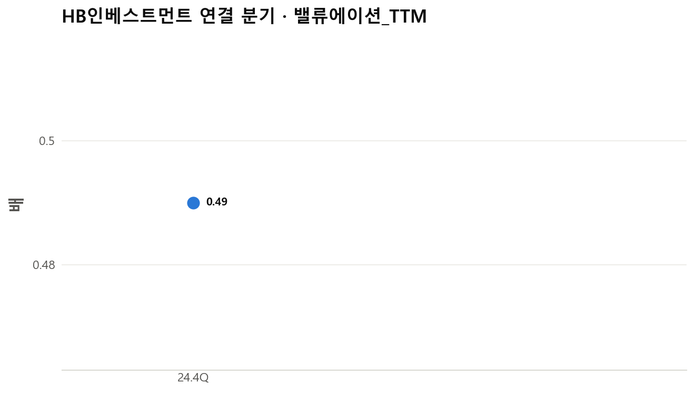
별도 · 분기/TTM · 7개
별도 · 연간 · 26개
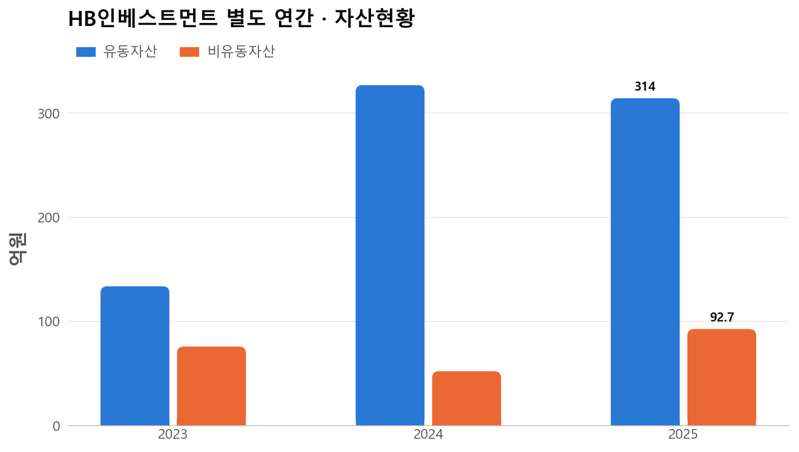
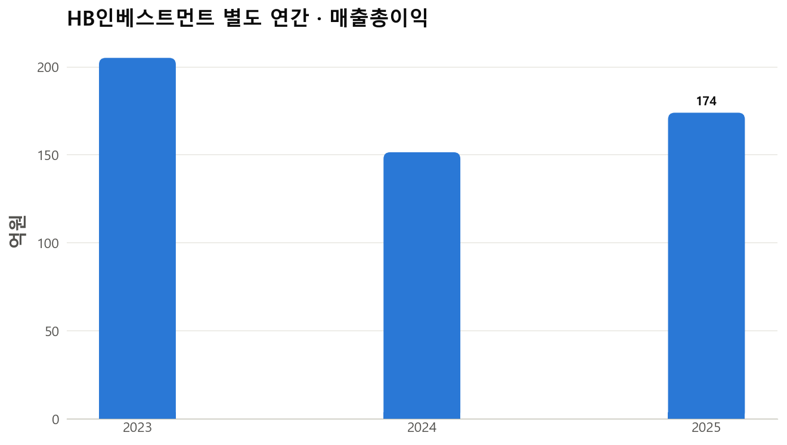
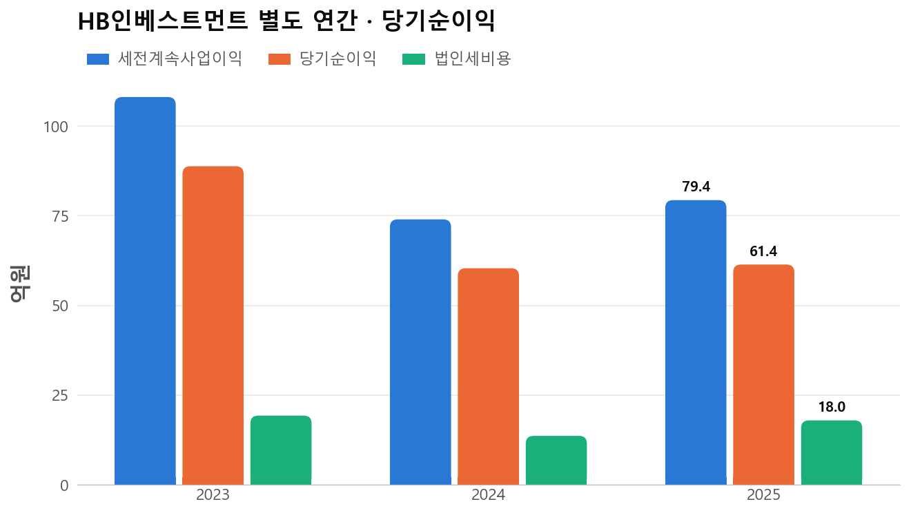
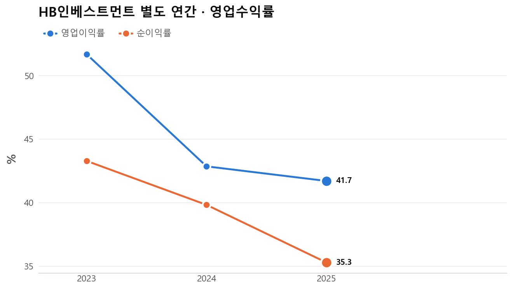
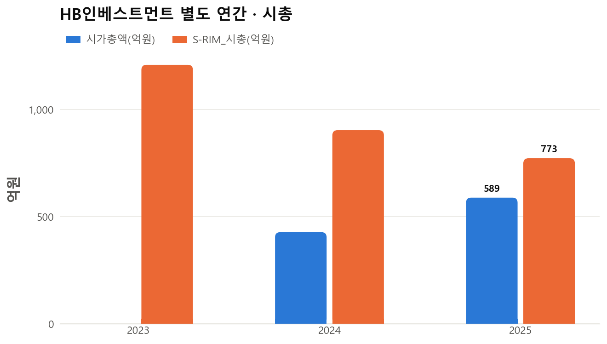
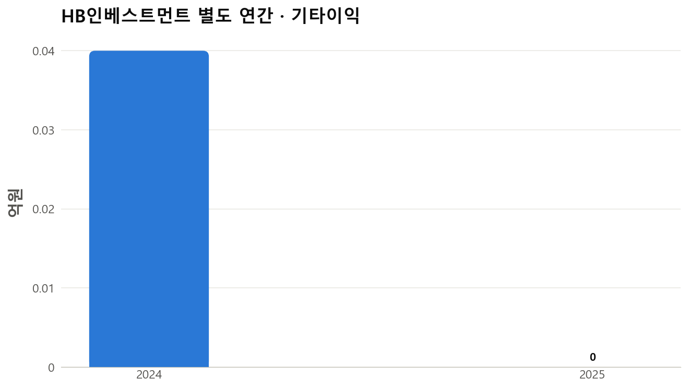
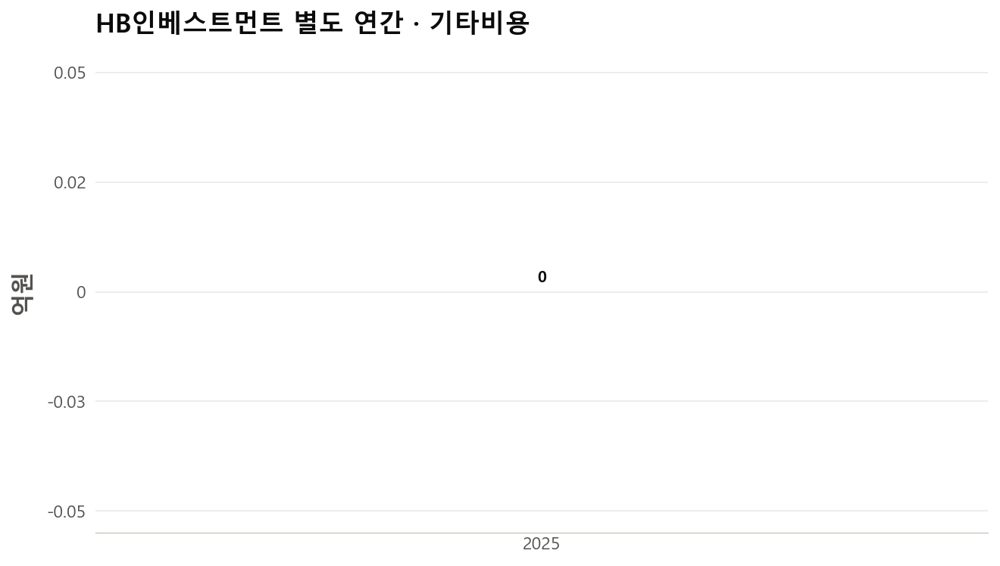
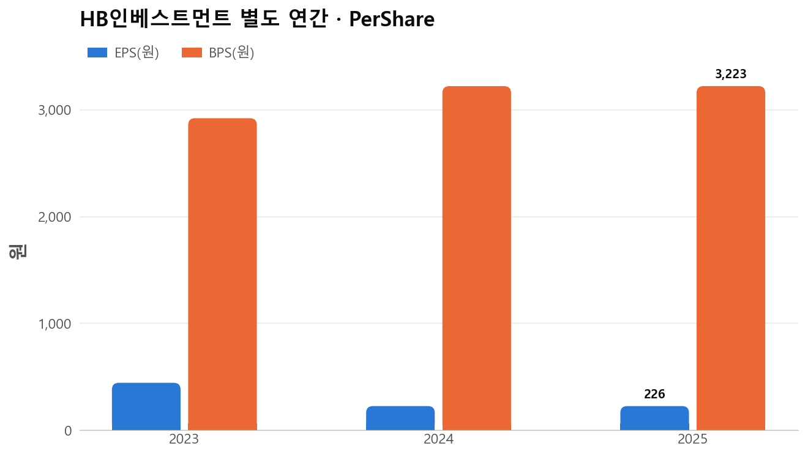
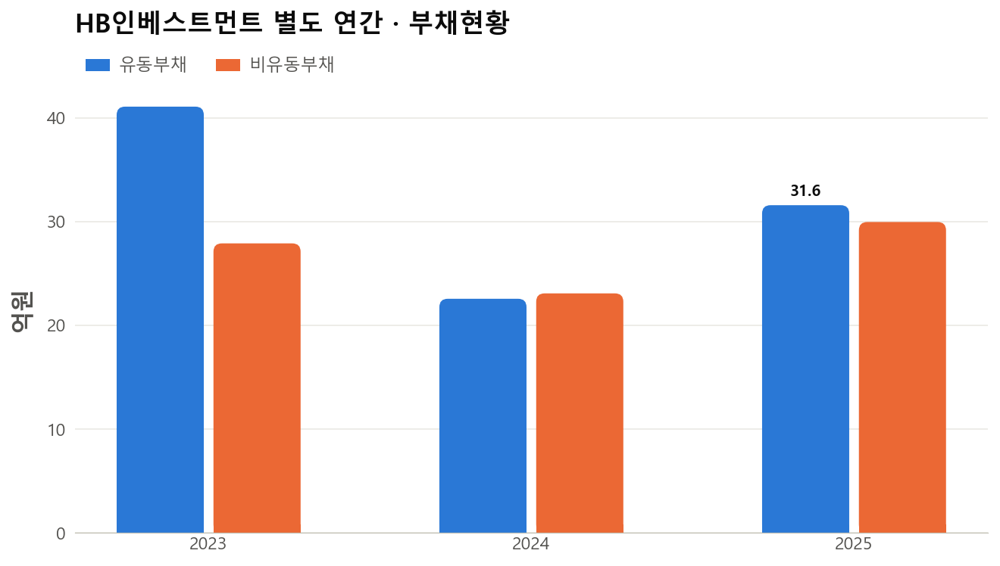
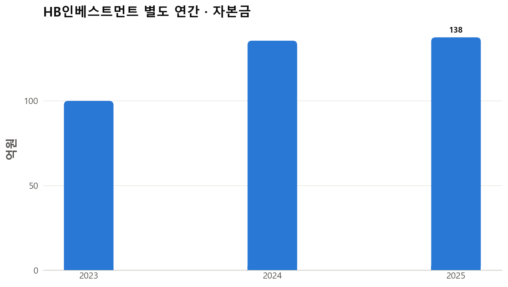
자료
- 재무·그래프: 기존 개별기업 분석 (35개 그래프)
- 네이버 증권 20건(최근 60일) + 구글 뉴스 96건(월별 1년)
- DART 14건 (정기·주요사항·거래소·자사주 등, 지분변동 보고 제외) · 공시 본문 4건 읽음 (원문 저장소 1건 · 새로 받음 3건) · 정기보고서 '반기보고서 (2026.06)' 핵심 장
- 한경컨센서스 리포트 0건 (최근 0건 본문 분석)
- 선진짱 채널 '선진짱 주식공부방': 1년간 언급 2건 중 이 기업이 주제인 리포트성 메시지 0건 (PDF 0건 본문 분석)
- 배당소득 분리과세: 미해당 (회사 공시)
- 인용 검증: 뉴스·공시·리포트·채널 인용 171건을 원문과 대조, 근거 불충분 1건 제거